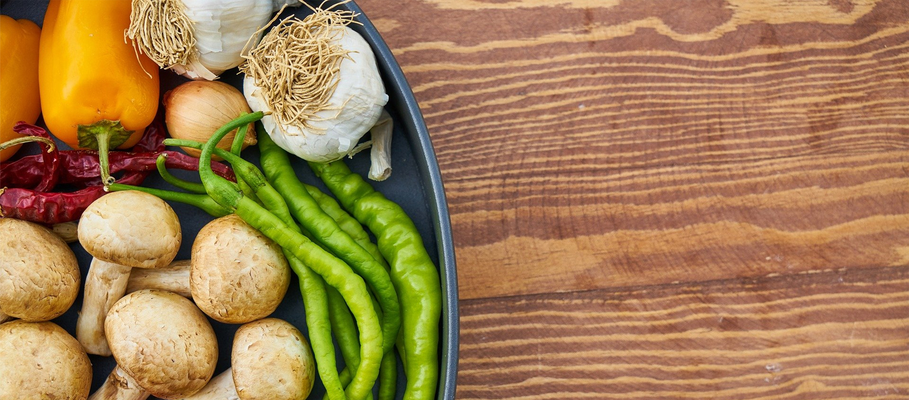

대상「전통시장 및 상점가 육성을 위한 특별법」 제2조에서 정한 전통시장 및 상점가 중
임대인-임차인 간 상생협약(50%이상) 체결된 곳
상인회 가입률, 상인회비 납부율, 온누리상품권 가맹률(취급율) 각 80% 이상인 곳
특성화시장 육성사업, 상권활성화구역 지원사업, 지자체 종합 지원사업 완료시장
기간지원시장 최종 확정일로부터 2년간(~‘21.12월)
규모총 2곳 (신규 1곳, 계속 1곳)
조건 및 한도시장 당 2년 간, 최대 20억원 이내
* 국비(40~60%), 지방비(40~60%) 매칭, 기초지자체의 재정 자주도에 따라 국비 최대 ±10% 차등지원
* 시장규모(점포수)에 따라 차등지원
예산2곳 시장, 총 2,000백만원(’20년도 국비기준)

문화관광형시장
지역문화 · 관광자원을 연계하여
시장 고유의 특·장점을 집중 육성하는
상인중심의 프로젝트 지원
대상「전통시장 및 상점가 육성을 위한 특별법」 제2조에서 정한 전통시장 및 상점가 중
임대인-임차인 간 상생협약(50%이상) 체결된 곳
상인회 가입률, 상인회비 납부율, 온누리상품권 가맹률(취급율) 각 80% 이상인 곳
특성화시장 육성사업, 상권활성화구역 지원사업, 지자체 종합 지원사업 완료시장
기간지원시장 최종 확정일로부터 2년간(~‘21.12월)
규모총 88곳 시장
조건 및 한도시장 당 2년간 최대 10억원(지방비 포함) 이내 지원
* 국비(40~60%), 지방비(40~60%) 매칭, 기초지자체의 재정 자주도에 따라 국비 최대 ±10% 차등지원
* 시장규모(점포수)에 따라 차등지원